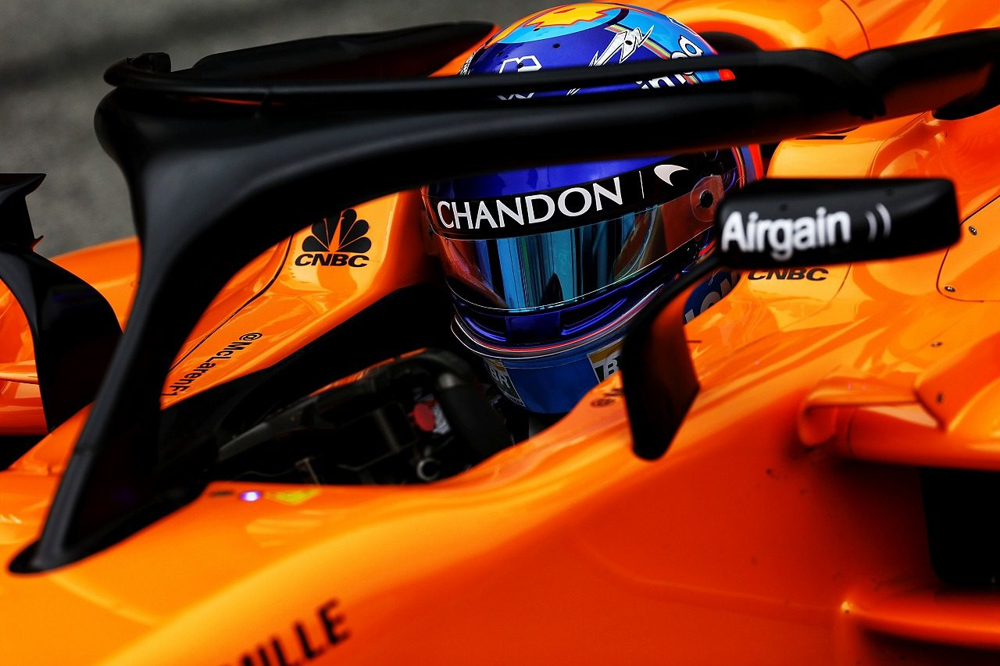

mclaren automotive
no restraints. no limitations.
McLaren Automotive is a creator of luxury, high-performance sportscars and supercars.
We don’t simply push boundaries.
We completely rethink them.
McLaren exists to create breathtaking performance road cars.
And deliver the most thrilling driving experiences imaginable.
mclaren racing
Racing has one single mission: to win Grands Prix and World Championships. To design, build and operate a Formula 1 car at race-winning levels requires focus, ambition, imagination, dedication and microscopic attention to detail. It demands excellence.
This was true 50 years ago when Bruce McLaren hand-picked a small group of associates to design and build racing cars bearing his own name, and it is still true today – 20 World Championships, 182 grand prix victories, and over 800 employees later. While McLaren Racing’s sporting successes have blossomed over the past half decade, so too has the sport of Formula 1 itself. With a race calendar that has doubled in size to include 20 grands prix spread across five continents, the sport has developed a massive global reach with more than 500 million TV viewers in 187 countries. McLaren Racing has shared this impressive growth with a roster of multinational partners, forming some of the longest sponsorships in sporting history. McLaren’s successful racing heritage has been driven by a relentless desire to innovate. Whether it be Bruce’s early experiments with four-wheel drive, pioneering the use of full carbon fibre construction, or inventing the game-changing ‘brake-steer’, McLaren has consistently led the way in the development of groundbreaking technologies that now have applications in the wider world. The other companies in McLaren Group – McLaren Automotive and McLaren Applied – are now continuing this legacy, taking F1 knowledge and expertise and developing new applications for consumer road cars, public transport and health.
mclaren applied
McLaren Applied works at the intersection of technology, data and human ingenuity to deliver quantifiable performance advantage in industries as diverse as health and public transport.
Since its inception almost three decades ago, McLaren Applied has continued to push the boundaries of innovation and high-performance. The company has developed capabilities in decision science, simulation, engineering, electronic systems and high-performance design, gained from decades of elite motorsport competition. The company was originally formed in 1989, then TAG Electronics, designing and engineering custom electric components for multiple motorsport teams and series. After the opening of the McLaren Technology Centre in 2004, the company transformed into McLaren Electronic Systems, expanding their offering of high-performance components, control and data systems for both the motorsport and the Automotive markets. McLaren Electronic Systems received the Queen’s Award for innovation in 2009 in recognition of its development of world-leading control and live data systems. 2013 saw the company win its second Queen’s Award for International Trade, this time for its successful export of electronics, software and components to global markets. In 2014, McLaren Electronic Systems merged with a new pioneering McLaren company called Applied Technologies, to form McLaren Applied. McLaren Applied is now active in four core markets including; health, public transport, automotive and motorsport. The company has expanded into new territories including London, Singapore and locations across North America, all of which house some of the finest engineering, design and commercial talent in the world.